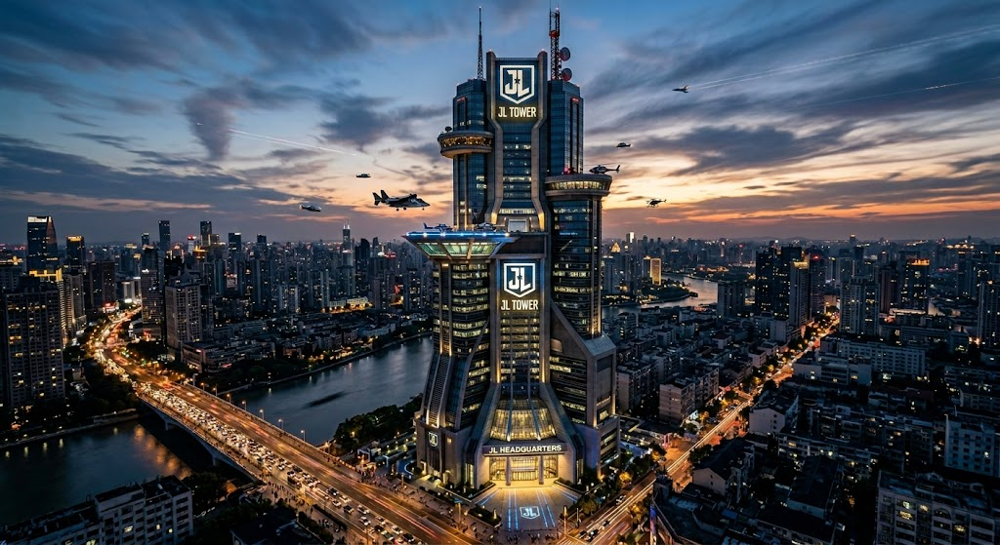

Justice League Declares Bankruptcy: Hall of Justice Faces Foreclosure

...obligations. METROPOLIS — The Justice League of America, once the ultimate bastion of peace and security, has officially filed for Chapter 11 bankruptcy. In a stunning press conference held on the steps of their iconic orbital headquarters, a visibly tired Batman confirmed that the organization can no longer sustain its massive operational overhead.
"Look, we fight intergalactic threats and stabilize the space-time continuum," Batman told reporters, while adjusting his cowl. "But we can't fight high inflation or the brutal reality of a commercial real estate mortgage in this economy. We’ve been consistently late on our property taxes, mortgage, and bills for the past three fiscal years, and the bank is no longer accepting 'saving the planet' as a valid payment deferral."
The financial strain has been felt throughout the organization. Insiders suggest that skyrocketing insurance premiums—caused by the near-constant destruction of Metropolis, Gotham, and various major coastal cities during "apocalypse-level events"—have made it nearly impossible for the League to maintain solvency.
The situation reached a breaking point last week when the Hall of Justice was slapped with a final notice of foreclosure. The League’s membership, comprised of the world's most powerful heroes, has struggled to pay their exponentially increasing quarterly dues. "Everyone is just stretched too thin," noted Flash. "When you're constantly running to fix disasters, you lose track of your checking account, and then due late fees."
The League plans to auction off various assets, including the Batmobile (the 2022 model, not the classic), Wonder Woman’s invisible jet (which experts say has been difficult to appraise), and several thousand leftover pieces of branded Justice League merchandise. As of this morning, the Hall of Justice is reportedly being rezoned for a high-end luxury condo development.